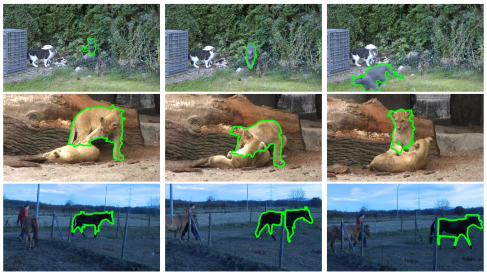
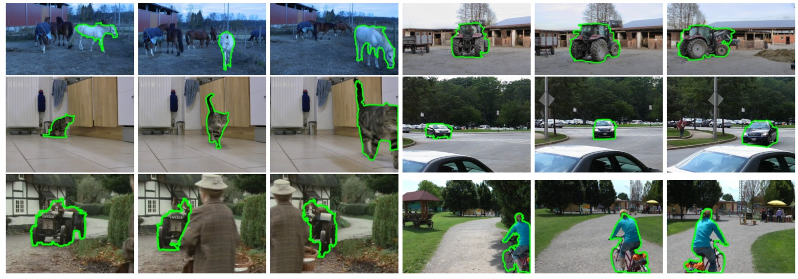

Fully Connected Object Proposals For Video Segmentation
1,2Federico Perazzi 2Oliver Wang 1,2Markus Gross 2Alexander Sorkine-Hornung
1ETH Zurich 2Disney Research Zurich

Figure 1. Example segmentations using our approach on three sequences of the Freiburg-Berkeley Motion Segmentation Dataset. Top to bottom: we demonstrate robustness to challenging situations typical of unconstrained videos such as fast-motion and motion blur, color ambiguities between fore- and background, and partial occlusions.
Abstract
We present a novel approach to video segmentation using multiple object proposals. The problem is formulated as a minimization of a novel energy function defined over a fully connected graph of object proposals. Our model combines appearance with long-range point tracks, which is key to ensure robustness with respect to fast motion and occlusions over longer video sequences. As opposed to previous approaches based on object proposals, we do not seek the best per-frame object hypotheses to perform the segmentation. Instead, we combine multiple, potentially imperfect proposals to improve overall segmentation accuracy and ensure robustness to outliers. Overall, the basic algorithm consists of three steps. First, we generate a very large number of object proposals for each video frame using existing techniques. Next, we perform an SVM-based pruning step to retain only high quality proposals with sufficiently discriminative power. Finally, we determine the fore- and background classification by solving for the maximum a posteriori of a fully connected conditional random field, defined using our novel energy function. Experimental results on a well established dataset demonstrate that our method compares favorably to several recent state-of-the-art approaches.

Figure 2. Top to bottom, left to right: qualitative video object segmentation results on six sequences (horses05, farm01, cats01, cars4, marple8 and people5) from the FBMS dataset. Our method demonstrates reasonable segmentation quality for challenging cases, e.g., non-rigid motion and considerable appearance changes (horse05, cats01). The rich set of features of the SVM and the pairwise potentials of the CRF make our method robust to cluttered background (farm1, cars4), while the fully connected graph on which we perform inference provides robustness to partial and full occlusions (marple8). The aggregation of object proposals is also effective for complex, multi-colored objects (people05).
Introduction
We propose an efficient alternative approach which exploits a fully connected spatiotemporal graph built over ob- ject proposals. We map our similarity term into a Euclidian space, which is computationally efficient to optimize and well suited for modeling long-range connections. The fully connected nature of the graph implies information exchange between both spatially and temporally distant object proposals, which in turn enables our method to be robust to the difficult cases of fast frame-to-frame motion and object occlusions. We additionally propose an energy term that incorporates sparse but confident long range feature tracks, in order to ensure similar temporal labeling of objects. While previous approaches are constrained to the selection of one proposal per frame, our formulation enables the grouping of multiple overlapping proposals in the same frame, yielding robustness to outliers and incorrect proposal boundaries. Given as input a set of object proposals and a few annotated foreground proposals, our algorithm consists of three steps. Initially, a rough classification and subsampling of the data is performed using a self-trained Support Vector Machine (SVM) classifier in order to reduce the size of the proposal space while preserving a large pool of candidate foreground proposals. Next, maximum a posteriori (MAP) inference is performed on a fully connected conditional random field (CRF) to determine the final labeling of the candidate proposals. Finally, each labeled proposal casts a vote to all pixels that it overlaps. The aggregate result yields the final foreground-background segmentation. We compare our results with an existing benchmark dataset and show that our method outperforms several state-of-the-art approaches.
Citation - BibTeX
Federico Perazzi, Oliver Wang, Markus Gross, Alexander Sorkine-Hornung. Fully Connected Object Proposals for Video Segmentation. IEEE ICCV , Santiago Chile, 11-18 December 2015. [ Pdf 3.6MB ] [ Poster ] [ Supplementary ] [ BibTeX ]